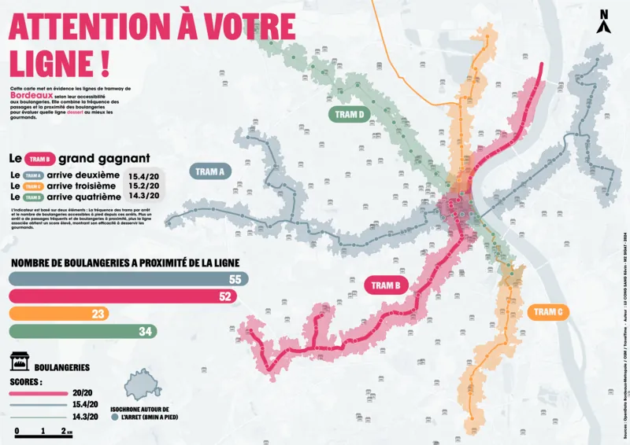

Dans le cadre de mon master, nous devions réaliser une carte à partir de données GTFS (General Transit Feed Specification). J'ai choisi de traiter ce sujet de manière ludique et visuelle en croisant les lignes de tramway de Bordeaux avec la localisation des boulangeries. Cette carte met en évidence, avec humour, l'accessibilité aux services de bouche en ville. Elle compare les différentes lignes selon le nombre de boulangeries situées à proximité immédiate des arrêts (isochrone de 8 minutes à pied), tout en illustrant la fréquence de passage pour établir un classement gourmand des lignes les mieux desservies pour les amateurs de pain et de viennoiseries.
Le projet s'appuie sur des données issues d'OpenStreetMap pour la localisation des boulangeries, croisées avec les données GTFS des lignes de tram de Bordeaux. Le traitement spatial a été réalisé sous QGIS, permettant notamment de générer des isochrones piétons autour des arrêts. La cartographie a ensuite été mise en forme graphiquement dans Illustrator, avec une attention particulière portée à la lisibilité et à l'esthétique. L'ensemble adopte un style visuel inspiré de la presse papier, dans une approche volontairement ludique et détournée des codes traditionnels de la cartographie technique.
Le projet a mobilisé l'ensemble de la chaîne de production d'une carte thématique : analyse spatiale, choix et pondération des indicateurs, traitement des données issues de différentes sources, puis design et réalisation graphique. Le résultat est une cartographie lisible, impactante et décalée, qui illustre de manière originale un sujet du quotidien tout en valorisant les potentialités des données de transport et des SIG dans une approche créative.